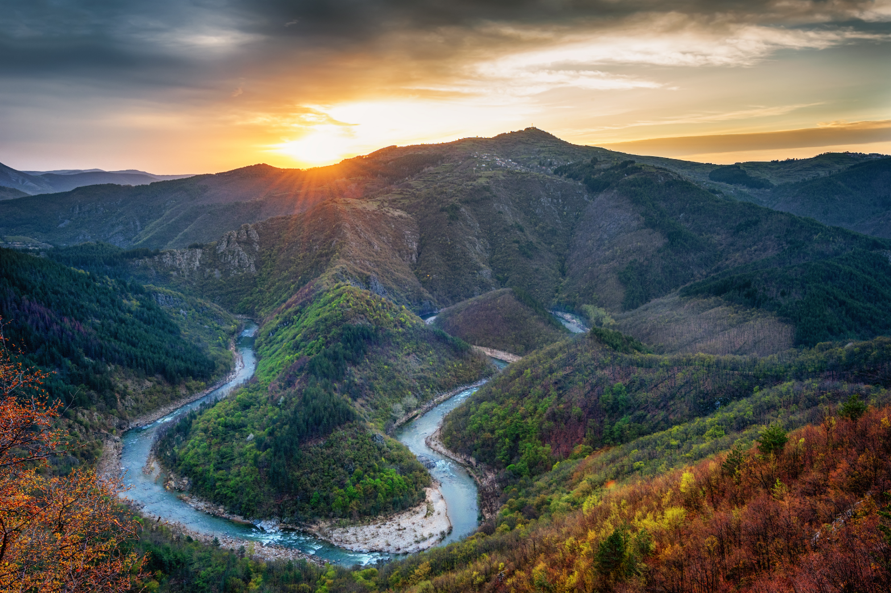

В Родопите се намират едни от най-красивите и живописни места в България. Тучни поляни в невероятни нюанси на зеленото се редуват с тъмни иглолистни гори, стръмни канари и живописни каньони. Ако има дестинация, която си струва да бъде посетена през всеки сезон от годината, то това със сигурност са Родопите. Планината се простира на обширна територия и заема голяма част от Централна Южна България. Разделя се условно на Западни и Източни Родопи. Западните Родопи са по-високи и в тях са съсредоточени високите върхове, ждрелата и пещерите, а Източните се характеризират с по-нисък релеф. В Родопите липсват типичните за Рила и Пирин високи зъбери и алпийски релефи. Известно е също, че планината не е заледявана през ледниковата епоха. В западната част на Родопите климатът е планински, докато на изток той е смекчен от топлите въздушни маси от Средиземноморието, донасяни по долините на реките.
